Built from EO data
The DiT backbone is initialized and trained from scratch on Git-10M.
9.24B · Flow Matching DiT · Earth Observation
Trained from scratch on EO data with native text, ground sample distance, latitude, and longitude conditioning.
Selected zero-shot observations
10 / 10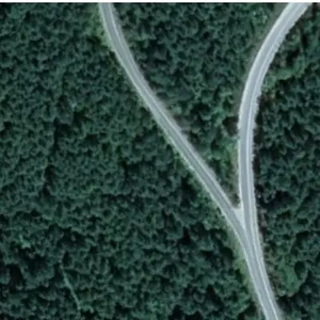
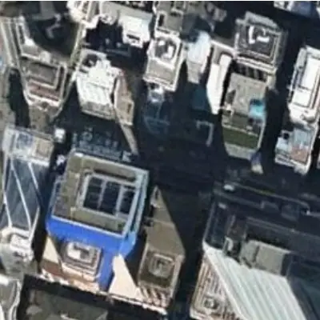
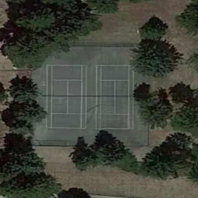
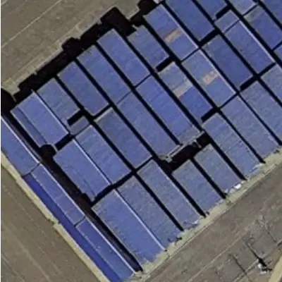
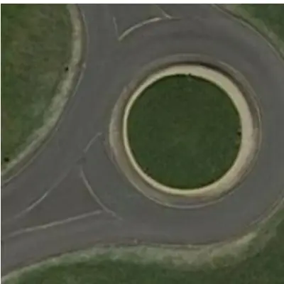
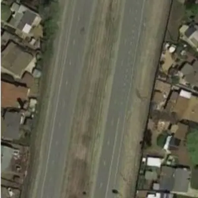
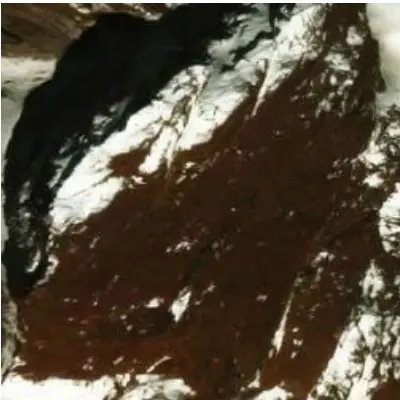
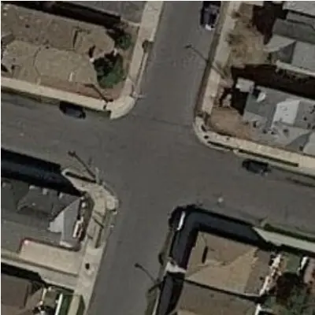
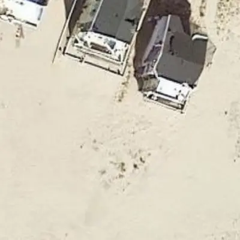
01Overview
Existing EO generators often inherit the perspective and composition biases of natural-image diffusion models. GeoCore-9B instead trains a large Flow Matching-based Diffusion Transformer from scratch on satellite RGB imagery.
Local text tokens join continuous GSD, latitude, and longitude metadata. A training-only Geospatial Semantic Alignment objective stabilizes structure, and the resulting prior transfers to cloud removal and SAR-to-optical translation through parameter-efficient adaptation.
The DiT backbone is initialized and trained from scratch on Git-10M.
Text, GSD, latitude, and longitude jointly guide generation.
LoRA adaptation supports restoration and cross-modal translation.
02Method
A scalable latent DiT learns the EO distribution while a satellite-specialist teacher supplies structural guidance only during pre-training.
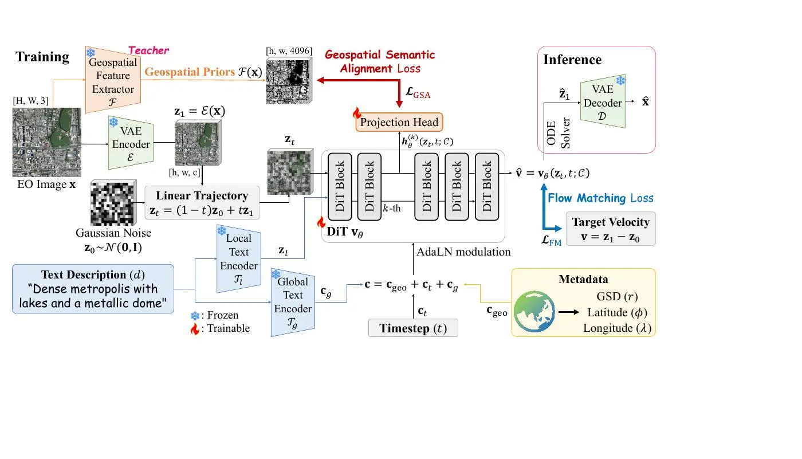
Text features enter the DiT alongside GSD and geographic coordinates. The frozen DINOv3-Sat teacher and projection head are removed at inference.
T5 latent tokens and CLIP global text join sinusoidally encoded GSD, latitude, and longitude through AdaLN.
The model predicts velocity along a linear path from Gaussian noise to the VAE latent.
Block 8 aligns with frozen DINOv3-Sat dense features at μ = 0.5, with zero inference overhead.
03Geo-aware generation
Language controls semantics, GSD controls physical granularity, and coordinates retrieve broad geographic priors.
03.A / Text
GeoCore-9B follows prompts for infrastructure, terrain, and settlement without drifting into ordinary photographic composition.
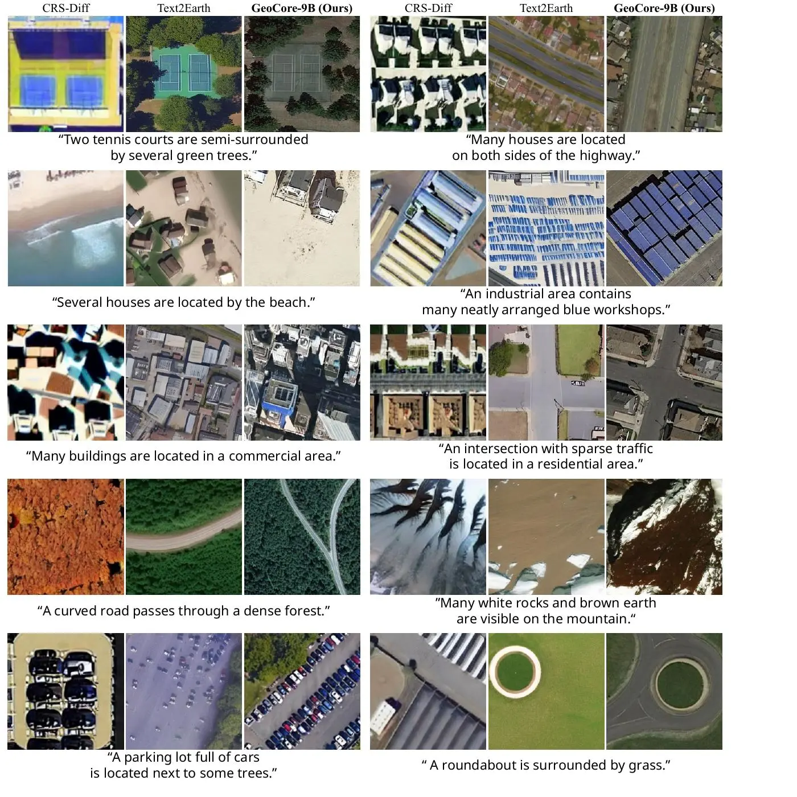
Cleaner EO structure across diverse scene descriptions.
03.B / GSD
Select a study set to inspect the transition from fine local detail to broad land cover.
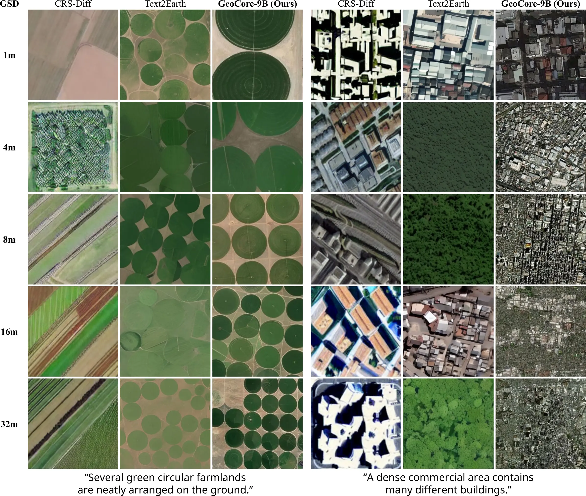
GeoCore-9B changes visual granularity across 1–32 m GSD while preserving scene identity.
03.C / Coordinates
Without text, the model produces distinct terrain priors for New York City, the Sahara, Antarctica, and the Amazon.
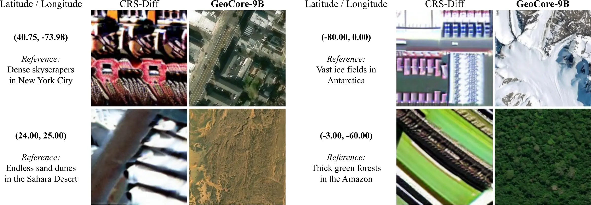
Text is removed; only latitude and longitude are supplied.
04GSA study
The matched 9B ablation changes only the Geospatial Semantic Alignment weight.
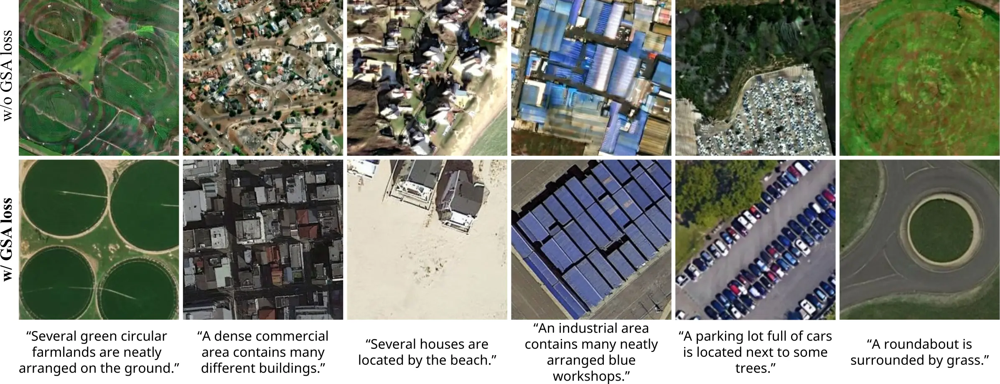
GSA reduces fragmented boundaries in farms, roofs, roads, and roundabouts.
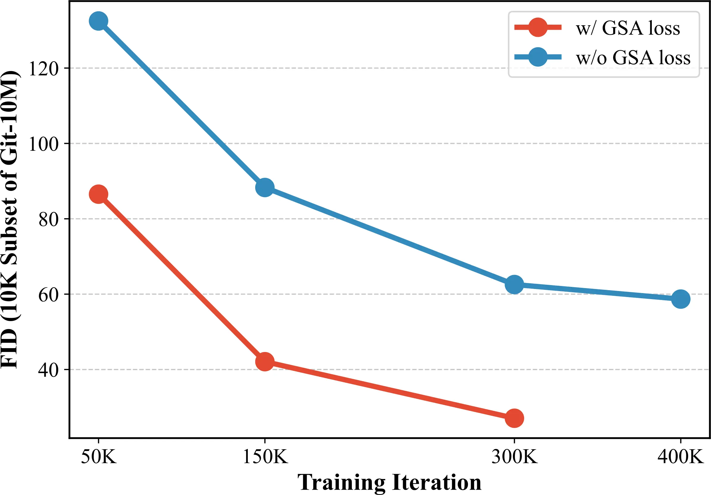
Lower FID throughout pre-training on a fixed 10K Git-10M subset.
The teacher and projection head supervise pre-training only. Both are discarded before downstream adaptation and inference.
05Results
GeoCore-9B is adapted with LoRA while its pre-trained backbone remains frozen.
| Task / dataset | Metric 01 | Metric 02 | Metric 03 | Metric 04 |
|---|---|---|---|---|
| Text-to-imageRSICD | 22.15IS ↑ | 18.82FID ↓ · best | 27.15CLIP ↑ | — |
| Cloud removalSen2-MTC | 20.809PSNR ↑ · best | 0.799SSIM ↑ · best | 0.256LPIPS ↓ | — |
| SAR-to-opticalQXS-SAROPT | 12.05FID ↓ · best | 0.377LPIPS ↓ | 0.0163HF-SCC ↑ · best | 0.370SSIM ↑ |
05.A / Practical adaptation
GeoCore-9B reconstructs roads, fields, and boundaries beneath severe cloud contamination.
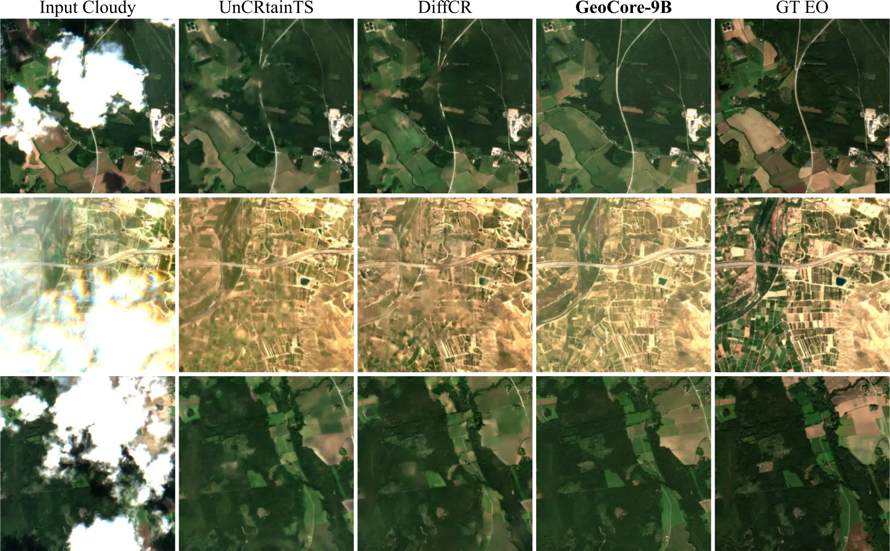
Input, specialist baselines, GeoCore-9B, and ground truth.
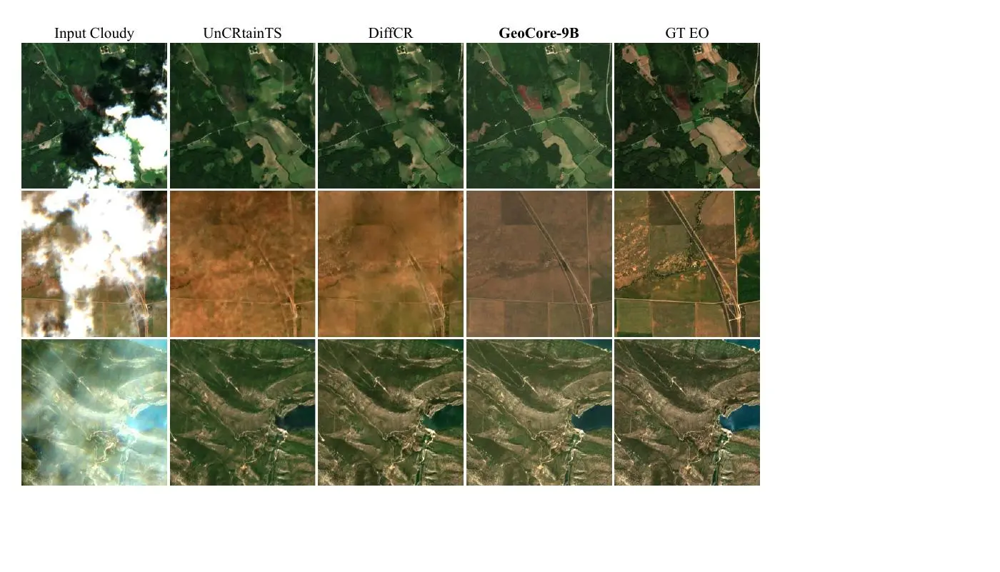
Additional qualitative comparisons under the same protocol.
06Resources
Method, controlled analyses, results, and limitations.
↗ ImplementationInference, models, evaluation, configurations, and scripts.
↗ CheckpointModel card, configuration, and released weights.
↗git clone https://github.com/KAIST-VICLab/GeoCore-9B
cd GeoCore-9B && pip install -r requirements.txt
# frozen Flux.2 autoencoder, Apache-2.0 copy (not the FLUX.2-dev one)
huggingface-cli download black-forest-labs/FLUX.2-klein-base-4B \
vae/diffusion_pytorch_model.safetensors --local-dir FLUX.2-klein-base-4B
python inference.py \
--ckpt /path/to/GeoCore-9B --vae FLUX.2-klein-base-4B/vae/diffusion_pytorch_model.safetensors \
--prompt "A satellite view of a highly dense urban city with towering skyscrapers" \
--lon 126.97 --lat 37.56 --res 0.0 \
--num-samples 4 --out samples/@article{do2026geocore,
title = {GeoCore-9B: Towards Geo-Aware Generative Foundation Models in Earth Observation},
author = {Do, Jeonghyeok and Kim, Munchurl},
year = {2026}
}This work was supported by the National Research Foundation of Korea (NRF) grant funded by the Korean government (MSIT) under the Sejong Science Fellowship Program (RS-2026-25484549), for the project “Visualizing the Invisible Earth: A Reliability-Aware All-in-One SAR Analysis Framework with Foundation Models.”